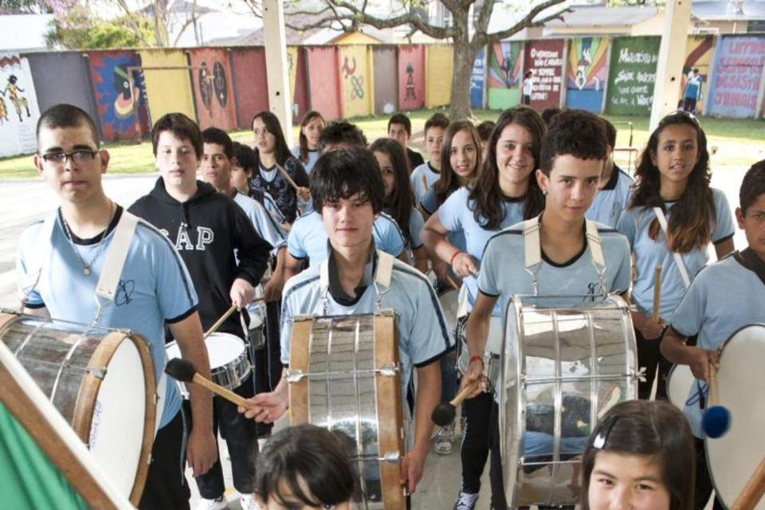

Feira de Ciências
Experimentos e pesquisas desenvolvidos pelos estudantes para compartilhar conhecimento com a comunidade.
Ver notícias →Projetos que estimulam criatividade, pesquisa, trabalho em equipe e protagonismo dos estudantes.
Experimentos e pesquisas desenvolvidos pelos estudantes para compartilhar conhecimento com a comunidade.
Ver notícias →Atividades de informática, programação, criação de sites e pensamento computacional.
Saiba mais →Ações de reciclagem, sustentabilidade e conscientização ambiental.
Participar →Atividades esportivas que estimulam saúde, disciplina e integração.
Ver eventos →